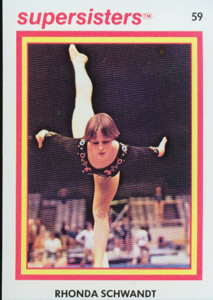

Rhonda Schwandt (USA)
1978 World Cup V Silver Medalist

Medal Total
World Cup: 1 Silver, 1 Bronze
Rhonda was born on April 19, 1963. She's currently a coach at Wildfire Gymnastics in Tustin, CA.
Competition Results
1976
World School Games: 1st AA
1977
Jr. USA Championships: 3rd AA, 2nd V
1978
Chunichi Cup: 6th AA
Hungarian International: 3rd AA, 1st V, 2nd UB, 2nd FX, 4th B
Jr. Elite Championships: 3rd AA
KIPS Invitational: 1st AA, 1st V, 1st UB, 1st FX, 4th B
Moscow News: 4th AA, 1st V, 3rd UB, 3rd B
Pacific Rim Championships: 4th AA
Riga International: 4th AA, 2nd V, 4th B
USA-JPN Dual Meet: 1st Team, 2nd AA
USA Championships: 6th AA
USA World Trials: 2nd AA
World Championships: 5th Team, 14th AA, 4th V
World Cup: 6th AA, 2nd V, 3rd UB
1979
Dial Selection Meet: 1st AA
National Sports Fair: 10th AA, 3rd V
Pacific Championships: 1st AA
USA World Trials: 2nd AA
1984
NCAA Championships: 2nd Team, 2nd V
This page was created on September
02, 2006 and was last updated on August 23, 2013.
© Gymn Forum